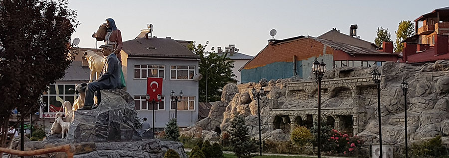
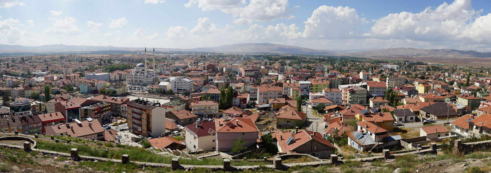

İLÇELER
Sivas ilinde 17 ilçe vardır. Cumhuriyetin 1923'teki ilanından önce Sivas'ın Aziziye (Pınarbaşı), Darende, Divriği, Gürün, Kangal, Koçhisar (Hafik), Suşehri, Şarkışla, Yıldızeli ve Zara, olmak üzere 10 adet ilçesi bulunmaktaydı. 1923'te Şebinkarahisar'ın il olmasıyla Suşehri ve Koyulhisar ilçeleri Sivas'tan ayrıldı. 1927 yılında ise Aziziye Kayseri iline bağlandı. 1933 yılında Şebinkarahisar ili ilçeye dönüştürülünce ona bağlı Suşehri ve Koyulhisar ilçeleri tekrar Sivas'a bağlanırken Darende ilçesi de Malatya'ya bağlandı. 1948 yılında İmranlı, 1953 yılında ise Gemerek ilçeleri kurularak Sivas'a bağlandı. 1990 yılında Akıncılar, Altınyayla, Doğanşar, Gölova ve Ulaş nahiyeleri de ilçe olarak Sivas'a bağlanınca Sivas'ın ilçe sayısı 17'ye yükseldi
Akıncılar
Anadolu'nun büyük bir kısmı gibi, Akıncılar ve çevresine Türklerin gelerek yerleşmesi 1071 Malazgirt Savaşı’ndan sonraya rastlamaktadır.
Ezbider ismi ile anılan ilçe Aşağı Ezbider ve Yukarı Ezbider olarak iki kısım halinde gelişmiştir. Bugün dahi bu iki yerleşim yeri birbirine bitişik halde değildir. 1860 Yılında Suşehri ilçe olduktan sonra Yukarı Ezbider onun nahiyesi ve Şebinkarahisar da vilayeti olmuştur. Ezbider de Cumhuriyetin kuruluşuyla birlikte küçük bir Belediye teşkilatının kurulduğu ve 1932 yılına kadar olan bu kısa dönemde, Hatipoğlu Ali Efendi ve Hüseyin Efendi ile Uğruncalı Tevfik Efendi'nin Reislik yaptıkları bilinmektedir.
Şebinkarahisar'ın 1932'de Vilayetliği kaldırılıp Giresun'a bağlanınca, Suşehri İlçesiyle birlikte Ezbider Nahiyesi de Sivas'a bağlanmıştır.
1958 yılında şimdiki belediye kurulmuştur.
1962 yılına kadar adı Yukarı Ezbider olan Nahiyenin bu tarihten sonra adı değiştirilerek "Akıncılar" olmuştur. 20.05.1990 tarihli Resmî Gazetede yayımlanan 3644 sayılı kanunla Suşehri’nden ayrılarak ilçe olmuştur.
Kaymakamlık Teşkilatı
Akıncılar 20.05.1990 tarih ve 3644 sayılı kanunla Suşehri’nden ayrılarak ilçe olmuştur.
Yapımı 2009 Aralık itibariyle tamamlanan hükümet konağına bütün resmî kurumlar 2010 Yılı Ocak ayında taşınmış olup, yeni binada hizmet vermeye başlamıştır.
Arazi ve İklim Koşulları
550 km2 yüz ölçüme sahip olan İlçenin güneyindeki Kızıldağ İmranlı İlçesiyle, kuzeyinde bulunan Kelkit Çayı da Giresun ile sınır çizmektedir.
Doğuda Gölova, batıda Suşehri ile komşudur.
Kılıçkaya Barajının gölalanı ilçe topraklarının bir bölümü üzerinde bulunmaktadır.
Akıncılar İlçesinde ortalama rakım 900 metredir.
En yüksek noktası 3015 metre ile İmranlı - Akıncılar arasında sınır olan Peynirli Tepesidir. En düşük rakım Kelkit Vadisindeki 700 metre ile Kayı Boğazı mevkiidir. İlçe merkezinde ise rakım 1050 metredir.
Kelkit havzası üzerinde Ezbider ovası bulunmaktadır.
Ayrıca Kızıldağ'da Gökalan, Solhun, Hışhış, Beşoluk, Örtülü ve Killik adlı yaylaları vardır. İlçede ovanın dışında kalan arazi yapısı genellikle engebeli olup, vadi, plato, bozkır ve meralarla kaplıdır.
İlçe merkezi Kızıldağın kuzey eteğinde bulunan Karadağ'ın Kelkit vadisine bakan yamaçlarında Samsun - Erzurum karayolunun 4 km güneyinde kurulmuştur.
Karasal iklim ve Karadeniz iklimi arasında geçiş tipi iklim özelliğine sahip olan İlçede, bu iklim özelliği nedeniyle bitki örtüsü zengindir.
Divriği
Eski Yunan kaynaklarında Aphlike, Bizans kaynaklarında Tefrike (Tephrice) şeklinde kaydedilen Divriği; Arap kaynaklarında suyun çıktığı yer/suyun kaynağı anlamında el-Abrik olarak geçer.
Osmanlı kaynaklarında (15.YY) Divrik ve Divriği tarzında yazıldığı görülmektedir.
Divriği’nin ne zaman ve kimler tarafından kurulduğu tam olarak bilinmemektedir.
Divriği tarihindeki en parlak yıllarını, 1150’lerden 1250’lere değin Mengücek Beyliği döneminde yaşamıştır.
Tarihsel kimliğinin en belirgin öğeleri olan Kale, Kale Camii, Ulu Camii ve Darüşşifası, Bedestenler, Kümbetler, Köprüler, Hamamlar ve çevredeki Kervansaraylar bu yüzyılda inşa edilmiştir.
Erzincan, Kemah, Şebinkarahisar ve Divriği’yi içine alan bu beyliğin kurucusu Alparslan’ın komutanlarından Emir Mengücek Gazi’dir.Mengücek Gazi (1180?-1118?) > İshak Bey (1118-1142) > 1. Süleyman (1142-1171) > Şahin Şah (1171-1196) > II. Süleyman (1196-1220) > Ahmet Şah (1220-1243) > Melik Müeyyed Salih (1243-1277).
I. Süleyman, Mengücek Beyliğinin Divriği kolunun kurucusudur.
Şahin Şah, Kale Camii’nin (1180/1181) banisidir.
Yine Sitte Melik Türbesi (1196) kendisi tarafından yaptırılmıştır.
Ahmet Şah, Ulu Camii (1128-1243) yaptıran beydir. Eşi Turan Melek aynı yıllarda Darüşşifayı yaptırmıştır.
Bugün bile Divriği’de Ahmet Şah’ın getirmiş olduğu içme suyundan faydalanılmaktadır.
Melik Müeyyed Salih, Son Mengücek Beyi’dir.
Moğol saldırısında yıkılan Divriği Kalesi’nin surlarını onarmış ve Arslan Burcu (1252) yaptırmıştır.
Mengücek Oğullarından sonra Divriği (1277-1516): 1340’a kadar Moğol (İlhanlılar) işgalinde kalmış; 1398’e kadar yerli bir hanedan olan Eretna Beyliği tarafından yönetilmiş; 1516 yılına kadar da Memlüklü hakimiyetinde kalmış Divriği, kesin olarak Mercidabık Zaferi (24 Ağustos 1516) sonrasında Yavuz Sultan Selim tarafından Osmanlı Devleti hakimiyetine alınmıştır.
Osmanlı Devleti döneminde Divriği, Sivas Vilayetine bağlı bir sancakbeyliği olarak örgütlenmiştir. Tanzimat döneminde ise (1843) mahalli idareler örgütlenirken Sivas’a bağlı, Anadolu’nun ilk (kaza) kaymakamlık merkezlerinden olmuştur.
Doğanşar
Doğanşar'ın antik adı HYPSELE'dir. Kelime İpsile şeklinde telaffuz edilerek günümüze kadar gelmiştir. Doğanşar ve çevresinin Osmanlı dönemindeki ismiTOZANLI idi. Kaza merkezi İpsile olarak anılırken geneli kaynakların tamamında Tozanlı Kazası veya Tozanlı Nahiyesi şeklinde adlandırılmıştır.
İpsile ve çevresi bu ismi, Tozan Bey ve aynı isimle anılan cemaatten almıştır. Tozan Bey, 1455 öncesinde yörede idarî ve askerî yetkilidir.
Aynı nahiyedeki bir grup köyün hem malikâne hem de divanî gelirlerini elinde bulundurmaktaydı. Tozanlı cemaatinin lideri durumundaydı.
1940 tarihinde nahiye merkezine de Tozanlı adı verilmiştir. Ancak, bu ismin kullanılmadığı görülmektedir. 1960 tarihinde İpsile adı Doğanşar olarak değiştirildi. Doğanşar; yeni doğan şehir, memleket demektir.
| Yıl | Toplam | Şehir | Kır |
| 1990 | 8.324 | 4.421 | 3.903 |
| 200 | 6.314 | 4.004 | 2.310 |
| 2007 | 3.346 | 2.129 | 1.217 |
| 2010 | 2.959 | 1.566 | 1.393 |
| 2015 | 2.324 | 1.421 | 1.903 |
| 2018 | 3.324 | 1.421 | 2.903 |
| 2020 | 2.324 | 1.861 | 1.983 |
Doğanşar Sivas ilinin bir ilçesidir. İl merkezine uzaklığı 101 km olup 2020 nüfus istatistiklerine göre toplam nüfusu 2,780'dir.
Gemerek

Eski çağlardan beri yerleşim yeri olan Gemerek, 1071'den itibaren Türkmen aşiretlerinin yerleştiği bir bölge olmuş, 1408’ de Timur’un Anadolu’dan çekilmesiyle tamamen Osmanlı topraklarına katılmıştır. Ne zaman kurulduğu kesin olarak bilinmemekle beraber, Malazgirt savaşından sonra bazı Türk aşiretleri tarafından kurulduğu, Osmanlı İmparatorluğu'nun yükselme devrinde kasaba olduğu bilinmektedir. Kanuni Sultan Süleyman'ın Nahçıvan Seferi sırasında burada konakladığı kitabe ve mezar taşlarından anlaşılmaktadır. Ali Cevat Gemerek için ‘’TENNUS’’ kazasının nahiyesidir der. Daha önce Sivas’ın Şarkışla İlçesine bağlı bir nahiye iken, 27.02.1953 tarih ve 6068 sayılı Kanun 3 Mart 1953 tarihli Resmi Gazete’nin 5706 sayılı sahifesinde yayımlanan Kanun ile Gemerek 1953 yılında ilçe olmuştur.
Gölova
eski adı Ağvanis olan Gölova’da yerleşme oldukça eskilere dayanır.
Gölova topraklarında M.Ö. 2000’li yıllara kadar Hititlilerin yaşadıkları, M.Ö. 2000 yılından sonra ise Romalıların yaşadıkları anlaşılmıştır. Yine belli bir dönem Pontus-Rum Devleti’ne bağlı kaldığı görülmüştür. 1071 yılından itibaren Anadolu’nun Türkleşmeye başlamasıyla birlikte 1100’lü yıllarda Türk kuvvetleri Gölova yakınlarına kadar gelmişlerdir. 1102 yılına kadar yöreye Saltuklular ve Danişmentliler hakim olmuşlardır. 1300’lü yıllarda Gölova’ya Mengücekoğlu ve Eretna Beylikleri hakim olmuşlardır. 1459-60 yıllarına kadar Moğolların istilasına uğrayan yöre bu yıllardan 1473 yılında Fatih Sultan Mehmet’in Otlukbeli Savaşı ile buralara hakim olması zamanına kadar Akkoyunlu Uzun Hasan’ın hakimiyeti altındadır. İlçe 1473 yılından itibaren Osmanlı İmparatorluğu hakimiyetine geçmiştir.
Evliya Çelebi seyahatnamesinde Gölova hakkında “Ağvanis, 200-300 haneli, cami ve kilisesi karşı karşıya olan, düz damlı evlerin çarşı etrafında dizili olduğu Rum ve Müslümanların salimen geçindikleri bir büyük kariye olup şarkındaki Karayakup Ağa’nın nezareti altındadır.” der.
13.06.1972 yılında Belediye teşkilatı kurulan Gölova 09.05.1990 tarih ve 3644 sayılı Kanunla 29 köy ve 6 mahalle ile ilçe olmuştur.
Gölova İlçesi, Karadeniz, İç ve Doğu Anadolu bölgelerinin birbirlerine en çok yaklaştıkları ve bu üç bölgenin de çeşitli özelliklerini taşıyan bir sahada bulunmaktadır.
Sivas İlinin kuzey doğusunda Orta Karadeniz bölgesinin iç kesimlerinde yer almaktadır.
Gölova kuzeyindeki Berdiğa dağlarından güneydeki Keldağ-Kızıldağ sırasına kadar uzanan 30 km. uzunluk ve 15 km. genişliğindeki bir çanak içerisinde yer almaktadır. 1. derece deprem bölgesinde olan İlçenin yeryüzü şekillerinde Kuzey Anadolu Fay Hattının etkileri kendini gösterir. Ortalama rakımı 1.320,00 metredir. Gölova çanağı genel olarak düze yakın bir görünüm arz eder.
Gölova’da İç Anadolu karasal iklimi ile Karadeniz İkliminin özelliklerinin bulunduğu karma iklime sahiptir.
İlçe İç ve Doğu Anadolu’nun karlı kışlarından daha ılık, Karadeniz’in aşırı yağışından az yağışlıdır.
Gölova’nın tabii bitki örtüsü bozkırdır.
Ancak İlçenin % 20’lik kısmını ormanlık ve fundalıklar oluşturmaktadır.
İlçenin Karadeniz iklimi geçiş bölgesinde olması bitki örtüsünü zenginleşmektedir.
Gölova’nın sosyal ve kültürel değerleri köklü bir geçmişe dayanmakta ve bugün de varlığını sürdürmektedir.
Gölova ve köyleri şenlik, festival, panayır gibi etkinliklerle kültürel değerlerini açığa çıkardıkları gibi gelecek nesillere de aktarmaktadırlar.
İlçenin temel geçim kaynağı tarım ve hayvancılıktır.
Bulunduğu yer itibarıyla üç bölgenin kesiştikleri bir yerde olması İlçenin sosyal hayatına etki etmiştir.
Sosyal hayatın şekillenmesini sağlayan diğer sebepler İlçenin farklı yöreler arasında bir geçiş alanı olması, devamlı göç vermesi ve Sivas il merkezine olan uzaklığıdır.
Gölova İlçesi ve köylerinde betonarme ve çok katlı evler yapılmaya başlanılmıştır.
Klasik tip diyebileceğimiz kırlangıçlı evler tamamen kaybolmuş gibidir.
Gürün
Gürün şehrinde yerleşimin geçmişiyle ilgili bazı görüşler bulunmaktadır.
Tabal'ın doğu sınırında Asurlular tarafından Tilgarimmu, Antik Dönem İbranice kaynaklarda (Yaratılış Kitabı) Togarmah olarak bahsedilen yerleşimin Gürün olduğu düşünülmektedir.
[2] Gürün merkez Şuğul Mahallesi sınırları içerisinde kaya mağaraları bulunmakta olup Şuğul Kanyonundaki Hitit kitabelerinden yola çıkarak bu mağaraların MÖ 2. binde Hititler döneminde yapıldığı düşünülmektedir.[3][4]
Hitit kralı I. Şuppiluliuma döneminde (MÖ 1344-1322) doğusundaki Hurriler üzerine düzenlediği seferde Tegarama şehrini ele geçirmiştir
. Bazı araştırmacılar bu şehri de Gürün'le bağdaşlaştırmaktadır.
[5] III. Şalmanezer’in hükümdarlığı (MÖ 859-824) döneminde Asurlular Tabal ülkesinin doğu sınırındaki Tilgarimmu yerleşimini ele geçirmişlerdir.
Bu çağlarda yerleşim, vadi geçitleri sayesinde Tabal ülkesinin doğudaki ülkelerle ulaşım güzergahı üzerinde yer almakta olduğundan önemli bir konumdadır. Ayrıca bölgedeki demir yataklarının varlığı da antik yerleşimin önemini arttırmıştır.[6]
Klasik Antik Çağ'da Gauraina adıyla yerleşimden bahsedilmeye başlanmıştır.[7][8]
Ahameniş İmparatorluğu döneminde Kapadokya satraplığı sınırları içerisinde yer alan yerleşim, MÖ 330’larda Makedonya Krallığı tarafından ele geçirilmiştir. Ancak kısa süre sonra Ahameniş satraplarından bir hanedan tarafından kurulan Kapadokya Krallığı egemenliğine girmiştir. Kapadokya Krallığı döneminde (MÖ 320-MS 17) stratigos tarafından yönetilen Sargaurasene satraplığı topraklarında yer almaktadır.[9] II. Tigran'ın hükümdarlığının başlarında Ermenistan Krallığı tarafından ele geçirilse de kısa süre sonra Lucius Cornelius Sulla komutasındaki Roma Cumhuriyeti Ermeni güçlerini yenerek kendilerine bağımlı Kapadokya Krallığına bırakmıştır. Roma güçlerinin çekilmesiyle Ermeni-Kapadokya krallıkları arasında sık sık el değiştiren bölge, MÖ 69 yılında Roma Cumhuriyeti'nin galibiyetiyle sonuçlanan Tigranakert Muharebesi neticesinde kalıcı olarak Kapadokya Krallığına bağlanmıştır.[10] Yerleşim, Kapadokya Krallığı’nın Roma İmparatorluğu tarafından ilhakı sonrasında kurulan Kapadokya Eyaleti şehirleri içerisinde yer almış, Roma İmparatorluğu'nun ikiye ayrılmasıyla da Bizans İmparatorluğu sınırlarında kalmıştır.
Hafik
1873 yılında Koçhisar adıyla ilçe olan Hafik, 1926'da yeniden eski adı olan Hafik adını almıştır. Türklerin Anadolu'ya gelişinden önce de önemli bir yerleşim yeri olan Hafik, Selçuklular ve OsmanlIlar dönemlerinde de önemini devam ettirmiştir.
İlçemiz Sivas'ın doğusunda, il merkezine 37 km uzaklıkta, ilçe merkezinde 3005, kırsalda 6514 olmak üzere toplam 9519 nüfusu, 76 köyü ve 53 mezrası olan, tarihi çok eskilere dayanan, kültürel özellikleri, tarihi kaya evleri, özellikle gölleri, ormanları ve geniş tarım arazileriyle doğal zenginliği bol, şirin bir ilçedir.
1970 ve 80'li yıllarda, sanayileşmenin bir sonucu olarak ilçemizden başta İstanbul olmak üzere büyük şehirlere yoğun bir göç yaşanmıştır.
Öyle ki son yıllarda kış aylarında bazı köylerimizin neredeyse tamamı boşalır hale gelmiştir. Bununla beraber son yıllarda özellikle yaz aylarında büyük bir yazlıkçı nüfusunun köylerimize geri dönmeye başladığını görmekteyiz.
İlçemizin ekonomisi Sivas'ın geneli gibi tarım ve hayvancılık ağırlıklıdır.
Kızılırmak havzasında yer alan köylerimizde büyük tarım arazilerinin varlığıyla tarım ön planda ve halkımızın en önemli gelir kaynağıdır. Yapımı tamamlanan Özen-Pusat Barajı ve İmranlı Barajlarının faaliyete geçmesiyle ilçemizde tarım alanında önemli bir gelişme olacaktır.
İlçemiz maden bakımında da son derece zengindir.
İlçemizde başta manganez, krom ve kireç taşı olmak üzere bir çok maden rezervi bulunmakta olup, bir kısmında üretim faaliyetleri devam etmektedir.
Hafik'in en önemli değeri ve Hafik'i tanıtacak en önemli özelliği, başta Hafik Gölü olmak üzere çok sayıda göllerinin bulunmasıdır.
Hafik Gölü, ilçemizin hemen yanı başında bulunması, Sivas'a 20-25 dakikalık mesafede yer alması ve güzel ve temiz doğasıyla ilçemizin ve hatta Sivas'ın en önemli ve en güzel mesire alanlarından birisi olmaya adaydır. Gölün etrafında 3 adet tesis bulunmakta olup, yazın hafta sonları Sivas ve çevre ilçelerden insanlarımız yoğun bir şekilde piknik yapmak için buraya gelmektedirler.
Bu amaçla Hafik Gölünü nasıl daha iyi tanıtabiliriz düşüncesiyle, çalışmalarımıza başlayarak gölün etrafındaki hazine arazilerinin tespitini yaptık ve öncelikli olarak gölün tesislerin bulunduğu bölgeden başlayarak ağaçlandırma çalışmaları başlattık.
Ayrıca gölün etrafında bir sahil yolu ve insanların piknik yapabilecekleri alanlar ile gölün ayağı üzerine taş kaplama tarihi Mostar köprüsü tarzında bir köprü yapılmıştır.
İlçemizin en önemli sorunu olan içme suyu ve yol sorunları, Hükümetimizin son yıllarda uygulamaya koyduğu KÖYDEŞ Projesi kapsamında yaptığımız çalışmalarla büyük oranda çözüme kavuşturulmuştur.
Özellikle 2008 yılında açılışını yaptığımız 35 köy ve mezra ile projeye dahil ettiğimiz Hafik merkezin içme suyunu sağlayan Alçıören Grubu İçme Suyu Projesiyle ilçemizin en büyük sorunu çözülmüştür.
İlçemizin tarihindeki en önemli olay ve aslında Türk tarihindeki en önemli olaylardan biri, OsmanlIların Söğüt'e yerleştirilmelerine vesile olan tarihi olay, ilçemizde yaşanmıştır.
1230'iu yıllarda Hafik ovasında Selçuklularla Moğollar arasında meydana gelen savaşta Selçuklular yenilmek üzere iken, obasıyla buradan geçmekte olan Ertuğrul Gazi 700 atlısıyla yardım ederek, Selçukluların galip gelmelerini sağlamıştır. Sultan Alaaddin Keykubat bu katkısından dolayı Ertuğrul Gazi'ye ileride büyük bir İmparatorluğun temellerini atacakları Söğüt bölgesini vermiştir. Bu tarihi olay nedeniyle Osmanlı İmparatorluğunun temellerinin ilçemizde atılmış olduğunu gururla söyleyebiliriz.
Bu olayın anısına Hafik'te, 1915 yılında dönemin Sivas Valisi Muammer Bey tarafından, Türk tarihinde İslamiyet'in kabulünden sonra dikilen ilk heykel olan, Osman Gazi'nin büstü dikilmiştir.
1936 da kaldırılan bu büst şu anda Sivas'ta müzede sergilenmektedir.
Bu amaçla ilçemizde bu tarihi olayı gelecek nesillere iyi anlatabilmek ve tarih şuurunu verebilmek için; Kaymakamlığımızın arka bahçesinde yapılan parkta, bu olayın anısına Osmanlı haritası ve ilk on padişahın isminin yer aldığı ve söz konusu tarihi olayın canlandırıldığı bir rölyef ile bu tarihi olayın anlatıldığı bölümden oluşan bir Osmanlı Anıtı yapılmştır.
İmranlı
İmranlı ve çevresi, tarihsel süreç içerisinde Hitit, Pers, İskender, Roma ve Bizans İmparatorluklarının hâkimiyetinde kaldığı bilinmektedir. Yine tarihi kaynaklarda bölgenin zaman zaman Müslüman Arapların eline geçtiği ve Malazgirt Savaşı sonrasında da Bizanslılar ile yapılan antlaşma gereğince, Kızılırmak yayının dışında kalan yerlerin doğusu ile beraber bu bölgenin Türk idaresi altına girdiği kaydedilmektedir.
İmranlı ve çevresinde 1075 yılında Danişmentliler, 1174 yılında Selçuklular, 1243 Köse Dağı Savaşı'ndan sonra Moğollar 1340'lı yıllarda Eretna Beyliği, 1381-1398 yılları arasında Kadı Burhaneddin ve daha sonra da Osmanlılar hüküm sürmüştür.
Yıllardır farklı kültürlerin kardeşçe bir arada yaşadıkları bir bölge olan İmranlı ilçesinin ilk defa kimler tarafından ve ne zaman kurulduğu bilinmemekle beraber bölgenin canlılığı 1877 - 1878 Osmanlı-Rus Savaşı'yla artmıştır. İmranlı geçmişinde çok yoğun bir orman dokusuna sahip olduğu bilinmektedir. Devrinin önemli bir yerleşim yeri olan Zara'nın doğusunda kalan bu yörede dikkate değer bir yerleşim yeri bulunmamaktadır. Batılı araştırmacı Sinclair 1372 yılında Zara'nın doğusundaki bugünkü İmranlı civarının aşırı derecede ormanlaşmış olduğunu ve belki de bu yüzden çok az sayıda seyyahın Zara'nın doğusunda şimdiki karayolu istikametinde seyahat ettiğini ileri sürmektedir. İmranlı ve civarında önemli herhangi bir kentin olmaması ve bölgenin aşırı ormanlık olması gibi sebeplerden dolayı, 17. yüzyılda yaşamış olan Osmanlı seyyahı Evliya Çelebi dahi Sivas'tan Erzincan'a ve Erzurum'a Zara ve Suşehri üzerinden seyahat etmiştir. Bu tespit bazı Sivas Salnameleri (Yıllık) tarafından da desteklenmektedir. Hicri 1308 (1890 - 1891) tarihli Sivas Salnamesi'ne göre de Zara kazasının Abaş ve Çit nahiyelerinde görkemli bir orman bulunmaktadır.Selçuklu ve beylikler zamanında bölgeye Türkmen, Oğuz, Yörük ve diğer Türk boyalarından göçler olmuştur. Kanuni Sultan Süleyman ve Sultan Abdülmecit zamanındaki göçler sebebiyle de fazla nüfusa sahip olmayan bölgenin demografisi yeniden şekillenmiştir. Kanuni zamanındaki göçler hakkında fazla bilgi olmamakla, Sultan Abdülmecit zamanında kuzeyde Kızılırmak'ın çıkış yatağı olan İmranlı bölgesine göçler ve yerleşimler olmuştur. Bu zamanda, bölgenin toprağı verimli, suyu ve havası temiz, ormanları bol idi. 19. yüzyılın son çeyreğinde, 93 Harbi olarak da bilinen 1877-1878 Osmanlı-Rus Savaşı'ndan dolayı Erzurum ve Kars illerinden bölgeye devlet eliyle göçler yaptırılmıştır. Göçmenlerin sayısı çok fazlaydı ve bölgeye gelenlerin büyük bir kısmı devlet tarafından şimdiki İmranlı ilçe merkezinin bulunduğu bölgeye yerleştirilmişlerdir. Bugün İmranlı olan arazi satın alınarak muhacirlerin iskânı sağlanmıştır. 1870 Sivas Salnamesi'nde 271 hanedeki 1.378 muhacirin bölgeye yerleştirildiği yer almaktadır.
İmranlı'nın yazılı kaynaklarda geçen ilk ismi olan Çit Sahrası, bu göçlerden sonra nahiye olmuş ve böylece Çit Bucağı adını almıştır. Yazar Aziz B. Erdeşir Astrabadi'nin Farsça yazılan Bezm-i Rezm adlı kitabının 494.sayfasında Çit'ten şöyle bahsedilmektedir: 'Kadı Burhaneddin, Kemah valisini tedip için Çit Sahrasına indi.' Kadı Burhaneddin ve devleti adlı kitabında Doç. Dr. Yaşar Yücel de 143.sayfada aynı konudan bahsetmektedir. Bu bilgilere göre, yazılı olarak 1340 yılından beri İmranlı ve çevresi Çit olarak bilinmektedir. 1890'da Sultan II. Abdülhamit döneminde Hamidabad olarak değiştirilen nahiyenin ismi, Hicri 1321 (1905) Sivas Salnamesi'nde de Hamidabad olarak geçmektedir. Bölgeye ikinci göç hareketi 1911-12 yıllarında yaşanmış olup 1911 yılında ise Hamidabad ismi Ümraniye olmuştur. 1 Ocak 1948 tarihinde çıkarılan bir kanunla Ümraniye ilçe statüsüne kavuşmuş ve ismi İmranlı olarak değiştirilmiştir.
İlçe olduktan sonra normal bir gelişim gösteren ilçenin nüfusu, önceleri artış gösterirken çeşitli sebeplere bağlı olarak son yıllarda azalma göstermiştir. 1990 nüfus sayımında 21649'a düşen toplam nüfus 2000 nüfus sayımında ise 13.883 olarak tespit edilmiştir.
Son 2016 yılı TUİK verilerine göre İlçe Nüfusu 7.115'tir.
Kangal
İlçenin yerleşim tarihi oldukça eskidir.
Anadolu tarihi ilk çağlardan beri medeniyetin beşiği olmuştur. Bir medeniyet yıkılırken yerine yeni bir medeniyet kurulmuştur.
İlçe topraklarının Anadolunun içerisinde olması nedeniyle yıllarca yerleşim merkezi olduğu gibi kurulan devletler arasında sınır teşkil etmesinden dolayı müstahkem mevkii durumuna gelmiştir. İlk çağlardan kalıntılar, ilçenin dağlık bölümünü oluşturan kuzey kesimini oluşturmuştur.
Köy Hizmetlerinin yol yapımında,Gençali köyü yakınlarında işlenmiş taşlar bulunmuştur.
Hüyük (Tümülüs) adı verilen yığmaları ilçe merkezinde, Yukarıhüyük, Tilkihüyük,Bulak köyü ve Kavak’ta bulunmakta olup henüz güncelleştirilmediği için hangi döneme ait olduğu bilinmemektedir.
Hitit krallığının en gelişmiş dönemi olan M.Ö.1400 yılarında Hititlerin doğu komşusu olan Kargamış ile arasındaki sınır ilçe yakınlarında Hitit dönemine ait Havuz köyünün doğusunda bulunan Karaseki mevkiinde tipik bir Eti şehri harabesi bulunmaktadır.
Ayrıca ilçe merkezine 46 km. uzaklıktaki Akçakale köyünde de Hitit dönemine ait bir kale bulunmaktadır.
Belirtilen dönemlere ait kalıntılar bakımsızlık nedeniyle harabe durumundadır.
Lityalılar devrinde,devrin komutanlarından GİGES döneminde yapılan ve Mezepotamya ticaretini Ege denizine bağlıyarak Sivas -Malatya - Diyarbakır istikametine giden kral yolu yapılmıştır. Belirtilen yol kral yolumu yoksa buna bağlı başka bir yol mu olduğu kesinlik kazanmamıştır.
Romalılar döneminde ilçemiz yerleşim merkezi olduğu Roma kalıntılarından anlaşılmıştır.
İlçe merkezinde bulunan çanak, çömlek kalıntıları bunun belgesidir. Bunlardan biri Sivas müzesinde muhafaza edilen ve pişirilmiş topraktan yapılan bir Lahittir.Bu lahit ilçemiz merkezinden çıkarılmıştır. Ayrıca bu döneme ait bir su kemeri olduğu da bilinmektedir. Ayrıca merkez ilçenin Alibey mevkiinde Romalılar dönemine ait olduğu sanılan çeşme ve kalıntıları olduğu bilinmektedir.
Selçuklu hükümdarı Alpaslan’ın Bizanslılar ile yaptığı Malazgirt savaşını takiben yapılan antlaşma uyarınca Kızılırmak yayının dışında kalan, Kızılırmağın doğusu ile birlikte ilçemiz yöresi de Selçuklu egemenliğine girmiştir. Bu dönemde ilçemiz ve çevresi Türkmenlerin yerleşim yerlerinden biri olmuştur.
Yöreye ilk gelen Türkmen beyleri yol güzergahı (Kral yolu) olması ile ayrıca tarım ve hayvancılığa elverişli olmasından dolayı bugünkü Humarlı,Mısırören ve Havuz köylerinin bulunduğu düz ve çayırlık araziye yerleştikleri bilinmektedir. Burada yerleşenlerin Oğuz Türklerinin KANGAR boyu olduğu tahmin edilmektedir.
Başlangıçta göçer ve hayvancılıkla uğraşan Türkmenler,Selçuklular döneminde yerleşik düzene geçerek bugünkü Humarlı, Mısırören ve Havuz köylerini kurmuşlardır. Bu göçler zaman zaman devam etmiştir.
II. Beyazıt döneminde Kangal İlçemiz Osmanlılara geçmiştir.
II.Selim İran seferine giderken İran saflarında yer almasın diye Erzincan, Tunceli dolaylarında yaşayan Türkmenlerin bir kısmını Zara,Divriği ve Kangal arasına yerleştirdiği bilinmektedir. 4.Murat Samsun ve Giresun limanlarını Anadolu’ya ve İstanbul’dan gelen yolu Halep’e kadar bağlaya meşhur Bağdat yolunu Humarlı köyü civarındaki Halep köprüsünün 1626 yılında tamamlanmasından sonra hizmete açılmış ve bölgeye canlılık kazandırmıştır.
Osmanlı-Rus savaşlarında (1877) doğuda ilerleyen Rus ordusundan Türk aileleri bugün Uzunyayla (Çerkez) bölgesine yerleşmiş, 1. Dünya savaşına müteakiben Milli Kurtuluş savaşında da göçler devam etmiş ve bu göçler ilçe merkezine de sirayet etmiştir.
Bu savaşlarda Milli saflar cephesinde yer almış Türk boylarıdır.
Kangal, 1901 yılında ilçe merkezi olmuştur.
Bu tarihten önce Bucak Subaşı ünvanı ile makam kisfesi, bir cüppe ve Markop denilen ayak giyimi ile sembolleşmiştir.
Kurtuluş savaşı yıllarında yurdun diğer taraflarında oluşturulan cemiyetlere ilaveten Kangal’da ULVIYE adli kadın cemiyeti oluşturulduğu ve Milli Mücadeleye böylece katkıda bulunduğu tespit olunmuştur.
ilçeye 1902 yılında ilk kaymakam olarak eski Sivas Valilerinden, tarihi kişiliği olan Muammer Bey atanmıştır.
İlçemizde tarım ıslah çalışmalarında bulunduğu bilinmektedir.İlçe merkezinden geçen Sivas - Malatya eski karayolu şosesi,eski Sivas valilerinden Halil Rıfat Paşa zamanında açılmıştır.
Dünyada emsali görülmemiş bir köpek türü olan Kangal Çoban köpekleri, Türkiye'de ve yabancı devletlerde haklı bir üne sahiptir.
Kangal Çoban Köpekleri çok cesur, gayet hızlı ve çeviktirler.
Kadın ve çocuklara karşı gayet muhlis, kötü niyetli kişilere karşı son derece caydırıcı bir silah olan Kangal köpekleri çok zeki, ön sezileri kuvvetli ve sahibine aşırı bağlıdırlar.
Sahibi tarafından azarlandığı zaman suçlu bir çocuk gibi başını öne eğer, sahibinin gözlerine mahsun mahsun bakarak af edilmesini bekler. Hislerini yalnız hal, hareket, mimik ve jestlerle değil çıkardıkları çeşitli tonlardaki havlamalarla belli ederler.
Kangal Çoban Köpekleri görevlerine çok sadıktırlar.
Şöyle ki; dağda sürüden ayrılan veya geride kalan koyunun başından günlerce aç ve susuz bekledikleri Kangal çiftçileri tarafından anlatılmaktadır.
Kangal Çoban Köpeğine sahip çiftçilerin en büyük gurur kaynağı köpeklerinin kurt boğmalarıdır.
Kurt boğan köpeğe sahip olmak onlar için bir ayrıcalık ve övünç kaynağıdır.
Yüzyılların ihmaline rağmen ne ırk vasıflarından ne de yüksek ruh yapısından en ufak bir taviz vermemiştir.
Kan asaletine çok bağlıdır.
Doğada serbestken bile başka bir karnivorla çiftleşmesi mümkün değildir.
1975 yılında askeri amaçla eğitime alınmış ve asırlardır bu yönde eğitim gören köpek türlerinden çok daha yetenekli olduğunu kanıtlamıştır.
Koyulhisar
1939 Erzincan depremi ve etkisi: Erzincan'da 26-27 Aralık 1939''da meydana gelen ve 52,5 saniye süren büyük depremde, Koyulhisar'da taş taş üstünde kalmamıştır.
Sabaha karşı saat 2.00 sıralarında olan bu 7,9 (MS=7,9) büyüklüğündeki depremde Erzincan ve çevresinde 116.720 konut yıkılmış, 32.962 kişi hayatını kaybetmiştir.
Koyulhisar, deprem sonrası yer değiştirerek yeniden yapılanmıştır.Geçimini ormancılık, hayvancılık ve tarımla yaparken, sanayileşme ise bulunduğu coğrafi durum ve tipik kente göç etme sebebi ile gelişememiştir.
İklim ve arazi koşulları nedeniyle İlçenin temel geçim kaynağı hayvancılık ve arıcılık olup, Kelkit Vadisi boyunca bulunan yerleşim yerlerinde küçük çapta tarımcılık yapılmaktadır. Orman ürünleri için marangozluk ve orman işçiliği yaygındır. Ortakent Bölgesindeki yerleşim yerlerinde hayvancılık ve ipek halıcılığı yaygındır.
İlçede bir adet un fabrikası ve bir adet bal paketleme tesisi bulunmaktadır. Ayrıca, Ortakent bölgesinde faaliyetine devam etmekte olan Turminko Maden İşletmesi mevcuttur. Yine aynı bölgede özel şirketler tarafından altın madeni arama (sondaj) ve işletme kurumu çalışmaları devam etmektedir.
Suşehri
İlçenin ilk yerleşim yeri şimdiki merkezin iki kilometre doğusunda Çayırbaşı mevkiinde bulunuyordu.
Bulahi ve Bulahiye adını taşıyan bu yerleşim yeri depremler sonucu yıkılınca ilçe Andıryas adı ile şimdiki bulunduğu yerde gelişmeye başlamıştır. (Halen ilçenin doğusunda bşir bölgeye Bulaklı denilmektedir.)
1865 Yılında yeniden yapılan vilayet düzenlemesinde Şebinkarahisar sancağı Trabzon'dan alınarak Amasya ve Tokat ile birlikte Sivas vilayetine bağlanmıştır. Bu düzenleme ile Suşar (Gölova) ve Akşar Subaşılıkları kaldırılmış ve Endres köyüne ilçe teşkilatı kurularak SUŞEHRİ adı verilmiştir.
İlçenin ilk yerleşim yeri şimdiki merkezin iki kilometre doğusunda Çayırbaşı mevkiinde bulunuyordu.
Bulahi ve Bulahiye adını taşıyan bu yerleşim yeri depremler sonucu yıkılınca ilçe Andıryas adı ile şimdiki bulunduğu yerde gelişmeye başlamıştır. (Halen ilçenin doğusunda bşir bölgeye Bulaklı denilmektedir.)
1865 Yılında yeniden yapılan vilayet düzenlemesinde Şebinkarahisar sancağı Trabzon'dan alınarak Amasya ve Tokat ile birlikte Sivas vilayetine bağlanmıştır. Bu düzenleme ile Suşar (Gölova) ve Akşar Subaşılıkları kaldırılmış ve Endres köyüne ilçe teşkilatı kurularak SUŞEHRİ adı verilmiştir.
Şarkışla
Şarkışla, M.Ö. 3000’li yıllarda Hitit Uygarlığının izlerine rastladığımız, köklü tarihi ve geçmişi olan bir ilçemizdir. Bu bölge daha sonra Pers, Büyük İskender, Kapadokya Krallığı ve Roma İmparatorluğu’nun yönetiminde kalmıştır. Bölgedeki ilk Türk egemenliği ise Danışmentliler ile sağlanmıştır. Bölgenin kontrolü daha sonra 1175 yılında Anadolu Selçuklularına geçmiştir. Son olarak Osmanlı idaresinde kalmıştır. 1873 yılında ilçe statüsü kazanmıştır. Sivas’ın ve çevre bölgenin en büyük, en gelişmiş ve kültür varlığı açısından da en zengin ilçesi durumundadır.Büyük halk ozanımız Âşık Veysel’in doğup büyüdüğü Sivrialan köyündeki evi 1982 yılından itibaren Kültür Bakanlığı tarafından müzeye dönüştürülmüştür ve o tarihten itibaren misafirlerine hizmet vermektedir. Müzede Âşık Veysel’in kişisel eşyaları, sazları fotoğrafları, şiirleri ve onunda ilgili yayımlanan eserler yer almaktadır. Âşık Veysel’in anısını yaşatmak için her yıl 9-11 Temmuz tarihleri arasında Şarkışla Sivrialan köyünde anma törenleri ve Âşık Veysel Âşıklar Bayramı yapılmaktadır.
Ulaş
Ulaş, 1990 yılı 20 Mayıs tarihinde 20523 sayılı Resmi Gazetede yayınlanan kararla ilçe statüsünü kazanmıştır. Ulaş, ilçe statüsüne kavuştuktan sonra idari birimler kurulmaya başlanmıştır. Ulaş Kaymakamlığı ilk olarak Belediye Başkanlığının şimdiki hizmet binasında çalışmalarına başlamıştır. Daha sonrasında Özel İdare ait iş merkezi ilçemizde Hükümet Konağı olarak kullanılmaya başlanmıştır.
2011 yılında temelleri atılan ve yapımı tamamlanan yeni Hükümet Konağımız 2014 yılında hizmete açılmıştır. Kaymakamlığımız ile birlikte; İlçe Nüfus Müdürlüğü, İlçe Özel İdare Müdürlüğü, Sosyal Yardımlaşma ve Dayanışma Vakfı Başkanlığı, Köylere Hizmet Götürme Birliği, Malmüdürlüğü, İlçe Tapu Müdürlüğü, İlçe Gençlik Hizmetleri ve Spor Müdürlüğü, Halk Eğitim ve Kütüphane bu binada hizmet vermektedir.
Ulaş İlçe Emniyet Amirliği İçişleri Bakanlığının 20.02.2001 ve Valilik Makamının 02.10.2001 tarihli onayı ile fiilen 05.11.2001 tarihinde Özel İdareye ait binada faaliyete başlamıştır. Daha sonrasında Özel İdare tarafından yapılan ve 2014 yılında faaliyete geçen yeni hizmet binasında hizmet vermeye başlamıştır. Ulaş İlçe Jandarma Komutanlığı kendi binasında hizmet vermektedir.
Ulaş PTT Merkez Müdürlüğünün binası kurumun kendisine ait olup 60 kanallı fiberoptik cihazla hizmet vermeye devam etmektedir.
TEDAŞ İşletme Şefliğinde kendi binasında hizmet vermekte olup tüm yerleşim birimlerinin elektrik işlemleri tamamlanmıştır.
Ulaş İlçe Merkez sağlık Ocağı 1975 yılında köy tipi sağlık ocağı olarak yapılmıştır.
Ulaş İlçe Sağlık Grup Başkanlığı 1990 yılında tesis edilmiştir. Şu an Ulaş Hastahanesi’ nde görevine devam eden İlçe Sağlık Grup Başkanlığı’ na bağlı olarak Baharözü Sağlık Ocağı, Yenikarahisar Sağlık Ocağı ve köylerde dört adet sağlık evi bulunmaktadır.
Ulaş İlçe Tarım İşletme Müdürlüğü Sivas-Malatya karayolu ve demiryolu güzergahında , il merkezine 37 km. mesafede kurulmuştur.
İşletme 1944 yılında Zirai Kombinalar adı altında faaliyete başlamış 01.03.1950 tarihinde 5433 sayılı Kanunla Devlet Üretme Çiftlikleri Genel Müdürlüğü bünyesinde, 01.01.1984 tarihinden itibaren 233 sayılı Kanun Hükmünde Kararname ile inekhaneler-haralar ile birleştirilerek Tarım İşletmeleri Genel Müdürlüğüne bağlanmış olup halen görevini sürdürmektedir.
İlçe Gıda Tarım ve Hayvancılık Müdürlüğü, İlçe Müftülüğü kendilerine ait hizmet binalarında hizmet sunmaktadırlar.
İlçede ayrıca T.C. Ziraat Bankası Belediye’ye ait binada, Tarım Kredi Kooperatifi ise kendi binasında hizmet vermektedir.
Yıldızeli
Sivas ve çevresi ile ilgili yazılan kitaplarda, hazırlanan yıllıklarda Yıldızeli tarihçesinin başlangıcı olarak 1639 yılı alınsa da, ilçede tarih öncesinde M.Ö.4500’lerden itibaren yerleşimlerin olduğu, yapılacak yeni arkeolojik çalışmalarla bu tarihin çok daha öncelerine inebileceği anlaşılmıştır. İlçenin Kalkolitik Devir’den itibaren, Eski Tunç, Orta Tunç, Hitit, Frig, Med ve Pers dönemleri, Makedonya Krallığı ve Hellenistik dönem, Roma, Bizans, Selçuklu, Beylikler ve Osmanlı döneminden günümüze kadar uzanan bir tarih sürecinde Orta ve Doğu Anadolu’nun bir geçiş bölgesi olarak sürekli iskana tabi olduğu anlaşılmaktadır.
Yeterli araştırma olmaması sebebiyle Yıldızeli civarında antik ismi bilinen yerleşim yoktur.
Bugünkü ilçe merkezinin bilinen ilk adı “YENİHAN”dır. Bu isim yöreye l639 yılında ilçenin yerleşim yeri olarak kurulduğu sırada yaptırılan handan dolayı verilmiştir. Osmanlılar döneminde ve Cumhuriyetin ilk yıllarında da aynı şekilde kullanılmıştır.
1936 yılında, ilçe sınırları içerisinde bulunan ve bölgenin en yüksek dağı olan Yıldız Dağı’ndan ( 2557) esinlenerek “Yenihan” adı “YILDIZELİ” olarak değiştirilmiştir.
Zara
İlçemizde yerleşim Kalkolitik Çağa kadar uzanmaktadır.
Tödürge Gölü civarında ki Kültepe Höyüğü bu döneme ait buluntuların yer aldığı bir yerleşim alanıdır. Zara Bizans Döneminde de yerleşim yeri olma özelliğini korumuş olup, Anadolu’nun Selçuklu Egemenliğine girmesinden sonra 13. Yüzyıl ortalarında bu imparatorluğun Vilayet-i Danışmendiye yönetim bölgesi içinde yer almıştır.Sivas İline 72 km, Erzincan’ a 178 km mesafede olan İlçemiz Doğuda: Suşehri ve İmranlı, Batıda: Hafik, Kuzeyde: Koyulhisar, Kuzeybatıda: Doğanşar, Güneyde: Divriği, Güneybatıda: Kangal İlçeleriyle komşudur.
2456 km2 yüzölçümünde, arazi genellikle dağlık ve kırsal olmakla birlikte, Kızılırmak Havzasında verimli arazi mevcuttur.
Az da olsa ormanlık alanı bulunan İlçemiz tipik bir kara iklimi özelliği taşımaktadır. Kızılırmak Vadisi içerisinde kalan İlçe Merkezinde yükseklik 1350 m’dir. En Önemli sulak alanı yaklaşık 5 km² büyüklüğündeki Tödürge Gölüdür.